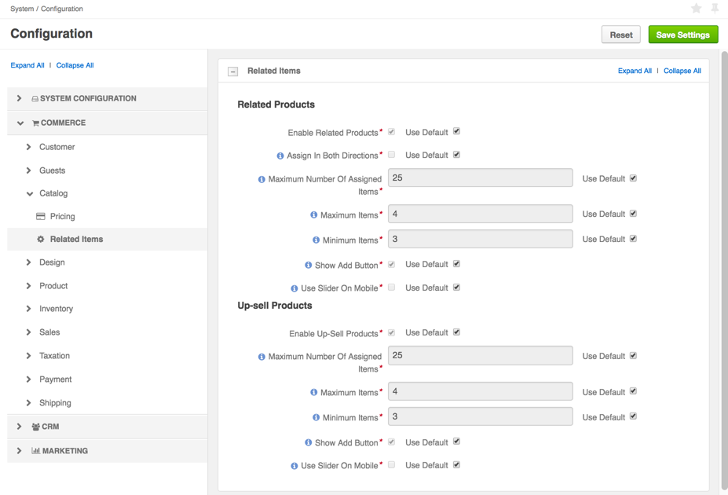

Related Products¶
Enable and Set Up Related Products Globally¶
Related products listed for the product may include accessories, services, and other items that are likely to be purchased in the same order. They facilitate navigation through the product catalog in the management console and help a buyer find the other products they may be interested in buying.
In the system configuration, you can:
- Enable and disable related product management for the products.
- Control the type of the relationship (one-way or bidirectional).
- Limit the number of items displayed as related.
These settings may apply globally, on the organization level, and on the website level.
To update the related products settings globally:
In the main menu, navigate to System > Configuration.
Select Commerce > Catalog > Related Items in the menu to the left.
The following page opens.
In the Related Products section, the following options are available:
Enable Related Products — Toggles managing related products on/off. Enabled by default.
Assign in Both Directions — When enabled, the products become mutually related. For example, when you add a lightning bulb as a related product for a standing lamp, the relation works both ways and the lamp automatically becomes related item of the lightning bulb. This option is disabled by default.
Maximum Number Of Assigned Items — A limit of related products that may be added to any product.
Maximum Items — A limit of related products that are shown to a buyer.
Note
Some related products may be hidden by the visibility settings. If the list of related products still exceeds the limit, only the specified number of items (top of the list) will be shown.
Minimum Items — The minimum number of related products that may be shown to the buyer. If the actual number of products is less than this value, the related products section is hidden in the front store for the product.
Show Add Button — Enables a buyer to order a related product from the related products section in the main product details. When the option is disabled, a buyer needs to open the related product details before they can add it to the shopping list.
Show Add Button is Enabled

Show Add Button is Disabled

Use Slider On Mobile — When enabled, one related product is displayed below the main product information. Other related products are accessible using the horizontal slider. Click < and > to slide through the related products.
To customize any of these options:
- Clear the Use Default check box next to the option.
- Set or clear the option, or enter the quantity.
Click Save.
Enable and Set Up Related Products per Website¶
Related products listed for the product may include accessories, services, and other items that are likely to be purchased in the same order. They facilitate navigation through the product catalog in the management console and help a buyer find the other products they may be interested in buying.
In the system configuration, you can:
- Enable and disable related product management for the products.
- Control the type of the relationship (one-way or bidirectional).
- Limit the number of items displayed as related.
These settings may apply globally, on the organization level, and on the website level.
To update the related products settings per website:
In the main menu, navigate to System > Websites.
For the necessary website, hover over the More Options menu to the right of the necessary website and click the Configuration icon to start editing the configuration.
Select Commerce > Catalog > Related Items in the menu to the left.
The following page opens.

In the Related Products section, the following options are available:
Enable Related Products — Toggles managing related products on/off. Enabled by default.
Assign in Both Directions — When enabled, the products become mutually related. For example, when you add a lightning bulb as a related product for a standing lamp, the relation works both ways and the lamp automatically becomes related item of the lightning bulb. This option is disabled by default.
Maximum Number Of Assigned Items — A limit of related products that may be added to any product.
Maximum Items — A limit of related products that are shown to a buyer.
Note
Some related products may be hidden by the visibility settings. If the list of related products still exceeds the limit, only the specified number of items (top of the list) will be shown.
Minimum Items — The minimum number of related products that may be shown to the buyer. If the actual number of products is less than this value, the related products section is hidden in the front store for the product.
Show Add Button — Enables a buyer to order a related product from the related products section in the main product details. When the option is disabled, a buyer needs to open the related product details before they can add it to the shopping list.
Show Add Button is Enabled
Show Add Button is Disabled
Use Slider On Mobile — When enabled, one related product is displayed below the main product information. Other related products are accessible using the horizontal slider. Click < and > to slide through the related products.
To customize any of these options:
- Clear the Use Default check box next to the option.
- Set or clear the option, or type in the quantity.
Click Save.